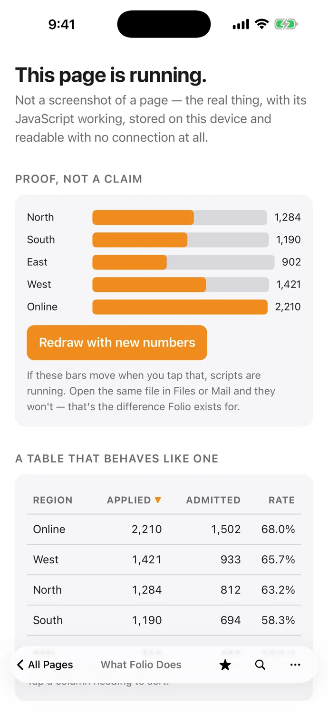
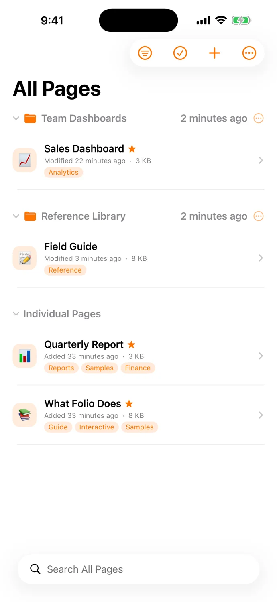
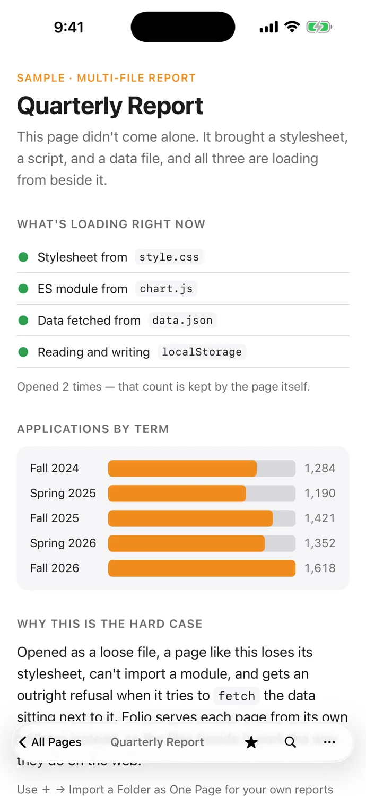

Open your reports offline.
Keep work dashboards and AI-generated reports on your device. Open them on your iPhone or iPad, even without an internet connection.
For iPhone and iPad
Save HTML reports and dashboards from work or AI chats. Open and use them offline on your iPhone or iPad.
No account required. No ads. Your space.

From a saved file to a useful page
Add an HTML report from Files or a share sheet. Keep it in your library, then open the page and use its controls.
Complete pages work offline. Live data and online services still need an internet connection.


Keep work dashboards and AI-generated reports on your device. Open them on your iPhone or iPad, even without an internet connection.
Add pages from Files, Google Drive, or another app’s share sheet, or watch a folder so its pages stay current. Organize them with tags and favorites, ready to use again.
Import a complete page with its images, scripts, and data. Saved content works offline. Live data and online services still need internet access, which you control per page.
Add a Folio widget in a small or medium size, or a circular one on the Lock Screen, and choose which page it opens. Touch and hold the app icon to jump to a favorite or recent page.
Require Face ID, or the device passcode, on any page. Locked pages stay protected when opened from a widget or a quick action, and are hidden in the app switcher.
Turn on iCloud sync to keep your library consistent across your iPhone and iPad, with page files and settings as separate choices. It is off until you ask for it, and any page can be left out.
Start with one HTML file
Save a work dashboard or a report from an AI chat. Keep it ready on your iPhone or iPad, even offline.